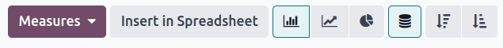

流水线分析¶
当潜在客户/商机从一个阶段到另一个阶段，从发起到销售（赢得）或存档（丢失）时，CRM 应用程序会对销售管道进行管理。
整理管道后，使用*管道分析*页面上提供的搜索选项和报告，深入了解管道及其用户的有效性。
要访问 管道分析 页面，请访问 。

浏览管道分析页面¶
访问 管道分析 页面时，会自动弹出一个条形图，展示过去一年的潜在客户。条形图表示处于销售管道各阶段的潜在客户数量，并用不同颜色标示出潜在客户达到该阶段的月份。

guilabel:`管道分析`页面的交互式元素可在多个视图中操作图表，以报告不同的指标。从左到右，从上到下，这些元素包括：
操作：由 ⚙️（齿轮） 图标表示，位于 管道分析 页面标题旁边。点击后，会出现一个下拉菜单，其中有三个选项，每个选项都有自己的子菜单：知识、仪表板、数据表。（更多信息请参阅 保存和共享报告）
搜索… 栏：显示当前应用于图表的筛选器和分组。要添加新的筛选器/分组，请在搜索栏中输入，或单击搜索栏末尾的 ⬇️ （向下箭头） 图标，打开选项下拉菜单。（更多信息请参阅 搜索选项）
右上角有不同图标代表的视图选项。（更多信息请参阅 View Options）
图表 视图：以条形图显示数据。这是默认视图。
透视 视图：在可定制的分类指标表中显示数据。
队列 视图：根据 创建日期 和 关闭日期 以周（默认）、天、月或年为基准，展示和组织数据。
List 视图：以列表形式显示数据。
在页面最左侧的 管道分析 页面标题下方，有更多可配置的筛选器和视图选项。
Measures: opens a drop-down menu of different measurement options that can be seen in the graph, pivot, or cohort view. The Measure drop-down menu is not available in the list view. (See Measurement Options for more information)
Insert in Spreadsheet: opens a pop-up window with options for adding a graph or pivot table to a spreadsheet in the Documents app or a dashboard in the Dashboards app. This option is not available in the cohort or list view.
选择图表视图后，可使用以下选项：
柱状图：将图表切换为柱状图。
折线图：将图表切换为折线图。
饼状图：将图表切换为饼状图。
堆叠：选中时，图表每个阶段的结果都会堆叠在一起。未选择时，每个阶段的结果显示为单独的柱状图。
降序：按从左到右的降序重新排列图表中的阶段。再次单击图标可取消选择。根据搜索条件，此选项可能不可用。
guilabel:
升序：按从左到右的升序重新排列图表中的阶段。再次单击图标可取消选择。根据搜索条件，此选项可能不可用。
选择透视图后，可使用以下选项：
翻转轴: 翻转整个表格的 X 轴和 Y 轴。
全部展开：当使用 ➕ （加号） 图标选择其他分组时，此按钮会在每一行下打开这些分组。
下载 xlsx：将表格下载为 Excel 文件。
搜索选项¶
guilabel:管道分析 页面可通过各种筛选器和分组选项进行自定义。
要添加新的搜索条件，请在搜索栏中键入所需的条件，或单击搜索栏旁边的 ⬇️（向下箭头） 图标，打开包含所有选项的下拉菜单。有关每个选项作用的更多信息，请参阅以下章节。

通过 筛选 部分，用户可以在搜索条件中添加预制和自定义筛选器。一次搜索可添加多个筛选器。
我的管道：显示分配给当前用户的潜在客户。
商机: 显示符合机会条件的潜在客户。
潜在客户: 显示尚未被确认为商机的潜在客户。
Active: 显示活跃潜在客户。
不活跃：显示不活跃的潜在客户。
赢得：显示已标记为**赢得**的潜在客户。
丢失：显示已标记为**丢失**的潜在客户。
Created On: show leads that were created during a specific period of time. By default, this is the past year, but it can be adjusted as needed, or removed entirely.
Expected Closing: show leads that are expected to close (marked Won) during a specific period of time.
Date Closed: show leads that were closed (marked Won) during a specific period of time.
Archived: show leads that have been archived (marked Lost).
Add Custom Filter: allows the user to create a custom filter with numerous options. (See Add Custom Filters and Groups for more information)
The Group By section allows users to add pre-made and custom groupings to the search results. Multiple groupings can be added to split results into more manageable chunks.
重要
添加分组的顺序会影响最终结果的显示方式。尝试以不同的顺序选择相同的组合，看看哪种方式最适合每种使用情况。
Salesperson: groups the results by the Salesperson to whom a lead is assigned.
Sales Team: groups the results by the Sales Team to whom a lead is assigned.
City: groups the results by the city from which a lead originated.
Country: groups the results by the country from which a lead originated.
Company: groups the results by the company to which a lead belongs (if multiple companies are activated in the database).
Stage: groups the results by the stages of the sales pipeline.
Campaign: groups the results by the marketing campaign from which a lead originated.
媒介：根据线索来源的媒介（电子邮件、Google Adwords、网站等）对结果进行分组。
来源：根据潜在客户来源（搜索引擎、潜在客户召回、时事通讯等）对结果进行分组。
Creation Date: groups the results by the date a lead was added to the database.
Conversion Date: groups the results by the date a lead was converted to an opportunity.
Expected Closing: groups the results by the date a lead is expected to close (marked “Won”).
Closed Date: groups the results by the date a lead was closed(marked “Won”).
Lost Reason: groups the results by the reason selected when a lead was marked “Lost.”
Add Custom Group: allows the user to create a custom group with numerous options. (See Adding Custom Filters and Groups for more information)
The Comparison section allows users to add comparisons to the same search criteria over another period of time.
此选项只有在搜索包含基于时间的筛选器时可用，例如 创建于、预计关闭`或 :guilabel:`关闭日期。虽然可以同时添加多个基于时间的筛选器，但一次只能选择一个比较。
Previous Period: adds a comparison to the same search criteria from the previous period.
Previous Year: adds a comparison to the same search criteria from the previous year.
The Favorites section allows users to save a search for later, so it does not need to be recreated every time.
Multiple searches can be saved, shared with others, or even set as the default for whenever the Pipeline Analysis page is opened.
Save current search: save the current search criteria for later.
默认筛选器：保存搜索时，选中此复选框，使其在打开 管道分析 页面时成为默认搜索筛选器。
Shared: when saving a search, check this box to make it available to other users.
Add custom filters and groups¶
除了搜索栏中的预制选项外，管道分析 页面还可以使用自定义筛选器和分组。
自定义筛选器是复杂的规则，可进一步自定义搜索结果，而自定义组则以更有条理的方式显示信息。
添加自定义过滤器：
在 管道分析 页面上，单击 搜索… 栏旁边的 向下箭头 图标。
在下拉菜单中，单击 添加自定义筛选器。
在弹出的 添加自定义筛选器 窗口中会出现一个默认规则（国家/地区位于 _____），该规则由三个唯一字段组成。可以对这些字段进行编辑，以制定自定义规则，还可以在单个自定义筛选器中添加多个规则。
要编辑一条规则，首先点击第一个字段（国家/地区），然后从下拉菜单中选择一个选项。第一个字段决定了规则的主要主题。
接下来，点击第二个字段，从下拉菜单中选择一个选项。第二个字段决定了第一个字段和第三个字段的关系，通常是**是**或**不是**语句，但也可以是**大于或小于**语句等。
最后，单击第三个字段，从下拉菜单中选择一个选项。第三个字段决定了规则的次要主题。
With all three fields selected, the rule is complete.
To add more rules: click New Rule and repeat steps 4-7, as needed.
To delete a rule: click the 🗑️ (trash) icon to the right of the rule.
复制现有规则： 点击规则右侧的 ➕（加号） 图标。
要创建更复杂的规则： 点击规则右侧的 添加分支 图标。这会在规则下方添加另一个修改器，用于添加 “所有” 或 “任何” 语句。

添加所有规则后，点击 添加 将自定义筛选器添加到搜索条件中。
删除自定义筛选器： 点击搜索栏中筛选器旁边的 ✖️ (x) 图标。
添加自定义组：
计量单位选项¶
默认情况下，:guilabel:`管道分析’页面衡量符合搜索条件的潜在客户总数，但也可更改为测量其他相关项目。
要更改选定的测量值，请单击页面左上角的 衡量标准 按钮，然后从下拉菜单中选择以下选项之一：
Days to Assign: measures the number of days it took a lead to be assigned after creation.
Days to Close: measures the number of days it took a lead to be closed (marked Won).
Days to Convert: measures the number of days it took a lead to be converted to an opportunity.
Exceeded Closing Days: measures the number of days by which a lead exceeded its Expected Closing date.
Expected MRR: measures the Expected Recurring Revenue of a lead.
Expected Revenue: measures the Expected Revenue of a lead.
Prorated MRR: measures the Prorated Monthly Recurring Revenue of a lead.
Prorated Recurring Revenues: measures the Prorated Recurring Revenues of a lead.
Prorated Revenue: measures the Prorated Revenue of a lead.
Recurring Revenues: measures the Recurring Revenue of a lead.
Count: measures the total amount of leads that match the search criteria.
查看选项¶
配置筛选器、分组和衡量标准后，:guilabel:`管道分析`页面可以多种方式显示数据。默认情况下，页面使用图形视图，但也可更改为透视图、队列视图或列表视图。
要将管道更改为不同视图，请单击位于 管道分析 页面右上方的四个视图图标之一。
图表视图是 管道分析 页面的默认选项。它以条形图、折线图或饼状图显示分析结果。
该视图选项适用于快速可视化和比较简单关系，如每个阶段的 计数 潜在客户数量，或分配给每个 销售人员 的潜在客户数量。
默认情况下，图表会衡量每个组中的 计数 潜在客户数量，但可以通过点击 衡量标准 按钮并从下拉菜单中选择另一个选项 <win_loss/measure>` 来更改。
小技巧
在此视图中使用条形图时，请考虑取消选择 堆叠 选项，以便使结果细目更清晰。
数据透视以表格形式显示分析结果。默认情况下，表格按销售管道的阶段对结果进行分组，并测量 :guilabel:` 预期收入`。
透视视图可用于分析比图表视图更详细的数字，或将数据添加到电子表格中，在电子表格中可以设置自定义公式，就像在 Excel 文件中一样。

页面左上方的三个图标具有以下功能：
翻转轴: 翻转整个表格的 X 轴和 Y 轴。
全部展开：当使用 ➕ （加号） 图标选择其他分组时，此按钮会在每一行下打开这些分组。
下载 xlsx：将表格下载为 Excel 文件。
注解
无法删除 阶段 分组，但可以通过点击 衡量标准 按钮更改值，并选择其他选项。
队列视图将分析显示为时间段（队列），可设置为天、周、月或年。默认情况下，选择 周。
该视图选项特别适用于比较成交线索所需的时间。

从左到右，从上到下，图表中的各栏分别代表以下内容：
创建于：此列中的行表示一年中存在符合搜索条件的记录的周数。
当设置为 周 时，标有 W52 2023 的行表示结果发生在 2023 年第 52 周： 2023 年第 52 周。
Measures: the second column in the chart is the measurement of the results. By default, it is set to Count, but can be changed by clicking the Measures button, and selecting an option from the drop-down menu.
Closed Date - By Day/Week/Month/Year: this column looks at what percentage of the measured results were closed in subsequent days/weeks/months/years.
平均值：该行提供列中所有其他行的平均值。
点击页面左上角的 下载 图标，还可将队列视图下载为 Excel 文件。
列表视图显示符合搜索条件的所有线索的单一列表。单击线索可打开记录进行仔细查看。点击列表右上方的 筛选器 图标，可在列表中添加其他详细信息，如 国家/地区、媒介 等。
该视图选项对于同时查看许多记录非常有用。

单击 ⚙️（齿轮） 图标，打开 “操作” 下拉菜单，其中有以下选项：
导入记录：打开一个用于上传数据电子表格的页面，以及一个用于轻松格式化数据的电子表格模板。
导出全部: 将列表下载为 Excel 的 xlsx 文件。
知识库：在 知识库 应用程序的文章中插入列表视图或链接。
仪表板: 将列表添加到 仪表板 应用程序中的 我的仪表板 中。
电子表格: 在 文件管理 应用程序的电子表格中链接或插入列表。
注解
在列表视图中，单击 新建 关闭列表，并打开 新报价单 页面。点击 创建潜在客户 则会打开一个弹出式窗口，用于生成报价单。这两项功能都不是为了操作列表视图。
创建报告¶
在了解如何 浏览管道分析页面 之后，就可以使用 管道分析 页面创建和共享不同的报告。在预设选项和自定义筛选器及分组之间，几乎可以实现任何组合。
创建报告后，可以 :ref:` 保存到收藏夹、与其他用户共享和/或添加到仪表板和电子表格 <win_loss/save_repheets>` 中。
使用 管道分析 页面创建的几种常见报告详述如下。
赢得/丢失报告¶
“赢得/丢失” 是对销售渠道中，活跃或以前活跃的潜在客户进行计算的结果，这些潜在客户在特定时间段内被标记为 赢得**或**丢失。通过计算赢得和丢失的商机，团队可以明确将潜在客户转化为销售额的关键绩效指标（KPI），如特定团队或团队成员、某些营销媒介或营销活动等。
赢得/丢失报告会筛选过去一年的潜在客户，无论赢得还是丢失，按潜在客户在管道中的阶段对结果进行分组。创建此报告需要自定义筛选器，并按 阶段 对结果进行分组。

Follow the steps below to create a win/loss report:
Navigate to .
在 管道分析 页面上，单击搜索栏旁边的 ⬇️ （向下箭头） 图标，打开筛选器和分组的下拉菜单。

In drop-down menu that appears, under the Group By heading, click Stage.
Under the Filters heading, click Add Custom Filter to open another pop-up menu.
在 添加自定义筛选器 弹出菜单中，单击 符合以下任一规则： 部分中的第一个字段。默认情况下，此字段显示 国家/地区。
点击第一个字段后会出现一个子菜单，其中有许多选项可供选择。从子菜单中找到并选择 激活 选项。这样就会自动填充其余字段。
The first field reads: Active. The second field reads: is. And lastly, the third field reads: set.
In total, the rule reads: Active is set.
Click New Rule, change the first field to Active, and the last field to not set. In total, the rule reads Active is not set.
Click Add.
The report now displays the total Count of leads, whether “Won” or “Lost,” grouped by their stage in the CRM pipeline. Hover over a section of the report to see the number of leads in that stage.

自定义赢/输报告¶
在 :ref:` 创建赢/输报告 <win_loss/win_loss>`后，请考虑使用以下选项自定义报告，以满足不同需求。
Example
销售经理可能会按销售人员或销售团队对赢/输进行分组，以了解谁的转化率最高。或者，营销团队可以按来源或媒介进行分组，以确定广告在哪里最成功。
To add more filters and groups, click the ⬇️ (down arrow) icon, next to the search bar, and select one or more options from the drop-down menu.
Some useful options include:
Created on: adjusting this filter to a different period of time, such as the last 30 days, or the last quarter, can provide more timely results.
添加自定义筛选器：单击此选项，并在下拉菜单的众多选项中滚动，可打开其他搜索条件，如 最后阶段更新 或 丢失原因。
点击 添加自定义群组 > 活跃： 点击 将结果分为 赢得**（:guilabel:`真`）或 **丢失**（:guilabel:`假`）。这显示了潜在客户在哪个阶段被标记为**赢得**或**丢失。
Multiple Groupings: add multiple Group By selections to split results into more relevant and manageable chunks.
Adding Salesperson or Sales Team breaks up the total count of leads in each Stage.
Adding Medium or Source can reveal what marketing avenues generate more sales.
By default, pivot view groups win/loss reports by Stage and measures Expected Revenue.
To flesh out the table:
Click the ⬇️ (down arrow) next to the search bar.
In the pop-up menu, replace the Stage grouping with something like Salesperson or Medium.
Click the Measures button and click Count to add the number of leads back into the report.
Other useful measures for pivot view include Days to Assign and Days to Close.
重要
In pivot view, the Insert In Spreadsheet button may be greyed out due to the report containing duplicate group bys. To fix this, replace the Stage grouping in the search bar with another option.
In list view, a win/loss report displays all leads on a single page.
要更好地整理列表，请点击搜索栏旁边的 ⬇️（向下箭头），然后添加更多相关分组，或重新整理现有分组。要重新排列巢状结构，请删除所有 分组方式 选项，然后按所需顺序重新添加。
要将更多列添加到列表中：
点击页面右上角的 筛选器 图标。
从下拉菜单中选择选项。一些有用的筛选器包括：
活动： 显示每个潜在客户的营销活动。
媒介：显示每个潜在客户的营销媒介（横幅广告、直销、电子邮件、Google Adwords、电话、网站等）。
来源：显示每条信息的来源（通讯订阅、潜在客户回访、搜索引擎等）。

保存并分享报告¶
在 创建报告 后，可以保存搜索条件，这样以后就不需要再创建报告。每次打开报告时，保存的搜索会自动更新结果。
此外，还可以与他人共享报告，或将报告添加到电子表格/仪表板中，以便进行更多定制和更方便地访问。
保存报告，以备后续使用：
在 管道分析 页面上，点击搜索栏旁边的 ⬇️ （向下箭头） 图标。
在出现的下拉菜单中，在 收藏夹 标题下单击 保存当前搜索。
在下一个出现的下拉菜单中，输入报告名称。
选中 默认筛选器 框可将此报告设置为访问 管道分析 页面时的默认分析。
选中 共享 复选框后，其他用户也可使用此报告。
最后，点击 保存。报告现在保存在 收藏夹 标题下。
将报告插入电子表格不仅能保存报告副本，还能让用户像在 Excel 文件中一样添加图表和公式。
将报告保存为电子表格：
在图表或透视图中：
点击 插入电子表格 按钮。
在弹出的菜单中，点击 确认。
在队列或列表视图中：
点击 :guilabel:`⚙️（齿轮）`图标。
在出现的下拉菜单中，将鼠标悬停在 电子表格 上。
在下一个下拉菜单中，点击 插入电子表格 或 电子表格链接。
已保存的报告可在*文件*应用程序中查看。

小技巧
修改电子表格并添加其他公式后，可以考虑将整个电子表格添加到仪表板中。使用这种方法，电子表格可以添加到公共仪表板，而不是只添加到 我的仪表板 中。
点击 。
在弹出的菜单中，为电子表格命名，并选择 仪表板部分 来放置报告。
点击:guilabel:
创建。
将报告添加到仪表板后，就可以将其保存起来，便于与 我的仪表板 的其他内容一起查看。
在 我的仪表板 中添加报告：
在 管道分析`页面上，单击 :guilabel:`⚙️（齿轮） 图标。
在出现的下拉菜单中，将鼠标悬停在 仪表板 上。
在 添加到我的仪表板 下拉菜单中，输入报告名称（默认情况下，报告名为 管道）。
Click Add.
查看已保存的报告：
返回主应用程序页面，并导航至 。